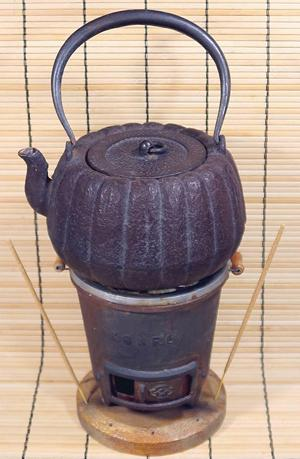

Tea Ceremony Kettle

This iron kettle was designed to serve hot water for tea in a Tea Ceremony
(Chado) setting. This is a very formal and structured event, preferably in a
purpose constructed tea house, or at least a separate room used only for the
Tea Ceremony. Actually, it can be performed outdoors, but still in a very
structured setting. The environment, all items used, and the behavior of the
host and guests are prescribed in detail. The rules were pretty much
solidified during the 1400s by Zen Buddhist monks.
I did not purchase this set. It was purchased, probably in the 1980s by
a friend, who was a bit strange, and a bit unstable. It was given to me by
his sister, along with some other Japanese items, some time after his self
inflicted demise. His Japanese period may have been over by then, as he did
not attempt a formal seppuku.
More on Japanese Serving Pieces
sv_teacer 220130 ©Andrew Grygus - agryg@aaxnet.com
- Linking to and non-commercial use permitted
All images not otherwise attributed are ©
cg1.